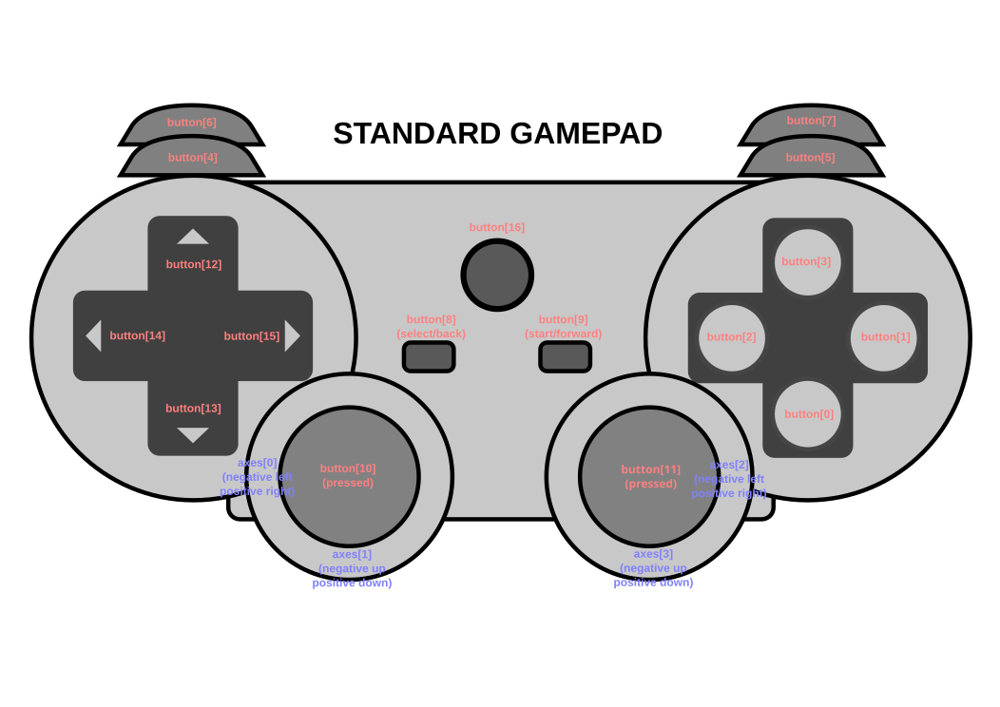

The Gamepad specification defines a low-level interface that represents gamepad devices.
This is a work in progress.
Some [=user agents=] have connected gamepad devices. These devices are desirable and suited to input for gaming applications, and for "10 foot" user interfaces (presentations, media viewers).
Currently, the only way for a gamepad to be used as input would be to emulate mouse or keyboard events, however this would lose information and require additional software outside of the [=user agent=] to accomplish emulation.
Meanwhile, native applications are capable of accessing these devices via system APIs.
The Gamepad API provides a solution to this problem by specifying interfaces that allow web applications to directly act on gamepad data.
Interfacing with external devices designed to control games has the potential to become large and intractable if approached in full generality. In this specification we explicitly choose to narrow scope to provide a useful subset of functionality that can be widely implemented and broadly useful.
Specifically, we choose to only support the functionality required to support gamepads. Support for gamepads requires two input types: buttons and axes. Both buttons and axes are reported as analog values, buttons ranging from [0 .. 1], and axes ranging from [-1 .. 1].
While the primary goal is support for gamepad devices, supporting these two types of analog inputs allows support for other similar devices common to current gaming systems including joysticks, driving wheels, pedals, and accelerometers. As such, the name "gamepad" is exemplary rather than trying to be a generic name for the entire set of devices addressed by this specification.
We specifically exclude support for more complex devices that may also be used in some gaming contexts, including those that that do motion sensing, depth sensing, video analysis, gesture recognition, and so on.
A gamepad is a collection of input controls (buttons, triggers, joysticks, thumbsticks, touch surfaces) and output controls (haptic actuators). A [=gamepad=] is available if the [=user agent=] can read the current state of its input controls. A [=gamepad=] that is not [=available=] is unavailable. The collection of input and output controls for a [=gamepad=] cannot change while the [=gamepad=] is [=available=]. Each input control has one or more input values that may update over time.
The [=user agent=] is responsible for enumerating [=available=] [=gamepads=], detecting when [=gamepads=] become [=available=] or [=unavailable=], and detecting when input controls have updated input values.
A [=gamepad=] has a gamepad identifier string, a human-readable string that identifies the brand or style of [=gamepad=]. The content is decided by the [=user agent=].
A [=gamepad=] may be a physical device. If so, it has an input control layout that describes the position, orientation and type of each input control on the physical device. The [=user agent=] is responsible for recognizing when an [=input control layout=] corresponds with a standard layout, meaning the relative positions and orientations of its input controls are close enough to the standard layout that a user can use it interchangeably with other devices that have the same input controls and correspond with the same layout.
A [=gamepad=] may have [=axis=] inputs. An axis is an input control with the following [=input values=]:
A [=gamepad=] has an axis list which is a [=list=] containing all the [=axis=] inputs for the [=gamepad=] in some order determined by the [=user agent=].
An input control may be designed to automatically return an [=axis=] to a center position when the user stops interacting with the input control. If so, the [=axis=] has a preferred axis state. An An [=axis=] with a [=preferred axis state=] may also have a center position value [=input value=] which is the [=logical axis value=] when the [=axis=] is centered.
A [=gamepad=] may have [=button=] inputs. A button is an input control that can be pressed to activate. A [=gamepad=] has a button list which is a [=list=] containing all the [=button=] inputs for the [=gamepad=] in some order determined by the [=user agent=].
An input control may be designed to automatically return a [=button=] to an unpressed state when the user stops interacting with the input control. If so, the [=button=] has a preferred button state.
A [=button=] may have a digital switch to indicate when the [=button=] is activated. If so, the [=button=] has a digital button value [=input value=] that is `true` when the [=button=] is activated and `false` otherwise.
A [=button=] may have an analog sensor enabling the [=button=] to report the degree to which the [=button=] is activated. If so, the [=button=] has these [=input values=]:
A [=button=] may be capable of detecting touch. If so, the [=button=] has a button touch value [=input value=] that is `true` when the [=button=] is touched and `false` otherwise.
A [=gamepad=] may have [=touch surfaces=]. A touch surface is an input control that provides 2D position data representing points of contact. A [=gamepad=] has a touch surface list which is a [=list=] containing the [=touch surfaces=] for the [=gamepad=]. The list is ordered such that [=touch surfaces=] closer to the left side of the [=gamepad=] appear closer to the start of the list.
A [=touch surface=] has an active touch point list [=input value=], a [=list=] of zero or more [=touch points=] representing the points of contact currently detected by the sensor, ordered such that earlier [=touch points=] appear closer to the start of the [=list=]. A touch point represents a single point of contact at a single point in time. A [=touch point=] has a touch x coordinate representing its position along the user's left-right axis and a touch y coordinate representing its position along the perpendicular axis.
A [=touch surface=] may have surface dimension [=input values=]. The surface width and surface height [=input values=] are the dimensions of the [=touch surface=] in the same units as the [=touch x coordinate=] and [=touch y coordinate=]. A [=touch surface=] has both dimension values or neither value.
A [=touch point=] may be a new contact point or a continuation of an earlier contact. A [=touch point=] is part of an existing active touch point if the [=user agent=] identifies that it is a continuation of a [=touch point=] represented by an earlier {{GamepadTouch}}. The active touch point id for a [=touch point=] is the {{GamepadTouch/touchId}} of the earlier {{GamepadTouch}}.
A [=gamepad=] may have [=haptic actuators=]. A haptic actuator is an output control capable of moving the [=gamepad=] in a way that can be felt by the user. A haptic effect is the use of one or more [=haptic actuators=] to provide feedback to the user. The [=user agent=] is responsible for commanding [=haptic actuators=] to play and stop [=haptic effects=] on [=available=] [=gamepads=].
A [=gamepad=] may have a vibration actuator which is a [=haptic actuator=] capable of playing a [=haptic effect=] to vibrate the whole [=gamepad=].
A [=haptic actuator=] has a [=list=] of supported effect types containing one or more {{GamepadHapticEffectType}} values, which cannot change while the [=gamepad=] is [=available=].
This interface represents a [=gamepad=].
[Exposed=Window]
interface Gamepad {
readonly attribute DOMString id;
readonly attribute long index;
readonly attribute boolean connected;
readonly attribute DOMHighResTimeStamp timestamp;
readonly attribute GamepadMappingType mapping;
readonly attribute FrozenArray<double> axes;
readonly attribute FrozenArray<GamepadButton> buttons;
readonly attribute FrozenArray<GamepadTouch> touches;
[SameObject] readonly attribute GamepadHapticActuator vibrationActuator;
};
The algorithms used to communicate with the system typically complete asynchronously, queuing work on the gamepad task source.
Instances of {{Gamepad}} are created with the internal slots described in the following table:
| Internal slot | Initial value | Description (non-normative) |
|---|---|---|
| [[\connected]] | `true` | A flag indicating that the [=gamepad=] is [=available=] |
| [[\timestamp]] | undefined | The last time data for this {{Gamepad}} was updated |
| [[\axes]] | An empty [=sequence=] | A [=sequence=] of {{double}} values representing the current state of each [=axis=] |
| [[\buttons]] | An empty [=sequence=] | A [=sequence=] of {{GamepadButton}} objects representing the current state of each [=button=] |
| [[\exposed]] | `false` | A flag indicating that the {{Gamepad}} object has been exposed to script |
| [[\axisMapping]] | An empty [=ordered map=] | Mapping from indices in the [=axis list=] to indices in {{Gamepad}}.{{Gamepad/axes}} |
| [[\buttonMapping]] | An empty [=ordered map=] | Mapping from indices in the [=button list=] to indices in {{Gamepad}}.{{Gamepad/buttons}} |
| [[\touches]] | An empty [=list=] | Holds the [=list=] of {{GamepadTouch}} objects representing all active [=touch points=] for the [=gamepad=]. If the [=gamepad=] has no [=touch surfaces=], then the list will remain empty. |
| [[\nextTouchId]] | 0 | {{GamepadTouch/touchId}} value to use for the next [=touch point=] that is not [=part of an existing active touch point=] |
| [[\vibrationActuator]] | undefined | The [=gamepad=]'s [=vibration actuator=] |
The [=gamepad=]'s [=gamepad identifier string=].
The exact format of the {{Gamepad/id}} string is left unspecified. It is RECOMMENDED that the [=user agent=] select a string that identifies the product without uniquely identifying the device. For example, a USB gamepad may be identified by its `idVendor` and `idProduct` values. Unique identifiers like serial numbers or Bluetooth device addresses MUST NOT be included in the {{Gamepad/id}} string.
Indicates whether the [=gamepad=] is [=available=].
The {{Gamepad/connected}} getter steps are:
The {{Gamepad/timestamp}} allows the author to determine when the [=input values=] for this {{Gamepad}} updated.
[=User agents=] SHOULD set a minimum resolution of the {{Gamepad/timestamp}} attribute to 5 microseconds, following [[HR-TIME]]'s clock resolution recommendation.
The {{Gamepad/timestamp}} getter steps are:
Indicates whether inputs in the [=axis list=] and [=button list=] are reordered when setting {{Gamepad}}.{{Gamepad/axes}} and {{Gamepad}}.{{Gamepad/buttons}}. If the [=user agent=] has knowledge of the [=input control layout=], then it SHOULD indicate that a mapping is in use by setting {{Gamepad/mapping}} to the corresponding {{GamepadMappingType}} value.
To select a mapping for a [=gamepad=], run the following steps:
Array of values for all [=axis=] inputs of the [=gamepad=] normalized to the range [-1 .. 1]. If the [=gamepad=] is perpendicular to the ground with the thumbsticks pointing up, -1 SHOULD correspond to "forward" or "left", and 1 SHOULD correspond to "backward" or "right". [=Axis=] inputs with [=input values=] from a thumbstick, joystick, or another input control that reports X and Y values SHOULD appear next to each other in the {{Gamepad/axes}} array, X then Y. It is RECOMMENDED that [=axis=] inputs appear in decreasing order of importance, such that element 0 and 1 typically represent the X and Y axes of a thumbstick or joystick. The same object MUST be returned until the [=user agent=] needs to return different values (or values in a different order).
The {{Gamepad/axes}} getter steps are:
Array of [=button=] states for all [=buttons=] of the [=gamepad=]. It is RECOMMENDED that [=buttons=] appear in decreasing importance such that the primary button, secondary button, tertiary button, and so on appear as elements 0, 1, 2, ... in the {{Gamepad/buttons}} array. The same object MUST be returned until the [=user agent=] needs to return different values (or values in a different order).
The {{Gamepad/buttons}} getter steps are:
A [=list=] of {{GamepadTouch}} objects representing the current contact points across all [=touch surfaces=].
The {{Gamepad/touches}} getter steps are:
A {{GamepadHapticActuator}} object that represents the [=gamepad=]'s [=vibration actuator=].
The {{Gamepad/vibrationActuator}} getter steps are:
When an [=available=] [=gamepad=] has updated [=input values=], run the following steps [=set/for each=] [=top-level traversable=] |traversable| of the [=user agent=]'s [=user agent/top-level traversable set=]:
To update gamepad state for |gamepad:Gamepad|, run the following steps:
To map and normalize axes for |gamepad:Gamepad|, run the following steps:
To compute the normalized axis value for an [=axis=] |rawAxis|:
If |rawAxis| has a [=center position value=]:
To map and normalize buttons for |gamepad:Gamepad|, run the following steps:
If |rawButton| has a [=digital button value=], set |button|.{{GamepadButton/[[pressed]]}} to the [=digital button value=].
Otherwise, set |button|.{{GamepadButton/[[pressed]]}} to `true` if the current [=normalized button value=] for |rawButton| is above the [=button press threshold=] or `false` if it is not above the threshold.
If |rawButton| has a [=button touch value=], set |button|.{{GamepadButton/[[touched]]}} to |rawButton|'s [=button touch value=].
Otherwise, set |button|.{{GamepadButton/[[touched]]}} to |button|.{{GamepadButton/[[pressed]]}}.
To compute the normalized button value for a [=button=] |rawButton|:
To record touches for |gamepad:Gamepad|, run the following steps:
If |point| is [=part of an existing active touch point=], set |touch|.{{GamepadTouch/touchId}} to the [=active touch point id=].
Otherwise, set |touch|.{{GamepadTouch/touchId}} to |gamepad|.{{Gamepad/[[nextTouchId]]}} and increment |gamepad|.{{Gamepad/[[nextTouchId]]}}.
If the {{Gamepad}} has multiple [=touch surfaces=] the {{GamepadTouch/touchId}} will be unique across surfaces.
`x = (2.0 * touchData.x / surfaceDimensions.width) -
1`
`y = (2.0 * touchData.y / surfaceDimensions.height) - 1`
A new `Gamepad` representing an [=available=] [=gamepad=] for a |window:Window| is constructed by performing the following steps:
To select an unused gamepad index given |window:Window|, run the following steps:
To initialize axes for |gamepad:Gamepad|, run the following steps:
Otherwise:
Otherwise, [=list/append=] |rawInputIndex| to |unmappedInputList|.
To initialize buttons for |gamepad:Gamepad|, run the following steps:
Otherwise:
Otherwise, [=list/append=] |rawInputIndex| to |unmappedInputList|.
This interface defines the state of an individual [=button=] on a [=gamepad=] at a single point in time.
[Exposed=Window]
interface GamepadButton {
readonly attribute boolean pressed;
readonly attribute boolean touched;
readonly attribute double value;
};
Instances of {{GamepadButton}} are created with the internal slots described in the following table:
| Internal slot | Initial value | Description (non-normative) |
|---|---|---|
| [[\pressed]] | `false` | A flag indicating that the [=button=] is pressed |
| [[\touched]] | `false` | A flag indicating that the [=button=] is touched |
| [[\value]] | 0 | A {{double}} in the range [0 .. 1] representing the degree to which the [=button=] is activated |
Indicates whether the [=button=] is pressed. This property MUST be `true` if the button is currently pressed, and `false` if it is not pressed. For buttons which do not have a digital switch to indicate a pure pressed or released state, the [=user agent=] MUST choose a button press threshold to indicate the button as pressed when its value is above a certain amount. If the platform API gives a recommended value, the [=user agent=] SHOULD use that. In other cases, the [=user agent=] SHOULD choose some other reasonable value.
The {{GamepadButton/pressed}} getter steps are:
Indicates whether the [=button=] is detecting any interaction, including interactions that do not cause the button to activate. If the [=button=] has a [=button touch value=], {{GamepadButton/touched}} is the [=button touch value=]. If the [=button=] does not have a [=button touch value=] but has an [=analog button value=], {{GamepadButton/touched}} is `true` if the current [=analog button value=] is greater than the [=minimum analog value=], otherwise `false`. If the [=button=] does not have a [=button touch value=] or an [=analog button value=], {{GamepadButton/touched}} mirrors {{GamepadButton/pressed}}.
The {{GamepadButton/touched}} getter steps are:
A value in the range [0 .. 1] representing the degree to which the [=button=] is activated. For [=buttons=] that have an [=analog button value=], this property MUST be the [=analog button value=] clamped to the [=minimum analog value=] and [=maximum analog value=] and then linearly normalized to the range [0 .. 1]. 0 MUST mean fully unpressed, and 1 MUST mean fully pressed. For [=buttons=] without an [=analog button value=], only the values 0 and 1 for fully unpressed and fully pressed respectively, MUST be provided.
The {{GamepadButton/value}} getter steps are:
This interface represents a [=touch point=] on a [=touch surface=]. The object consists of a {{GamepadTouch/touchId}} that uniquely identifies the [=touch point=] from the time the input medium (e.g. finger, stylus, etc) makes contact with the [=touch surface=], up to the time the input medium is no longer making contact with the surface.
dictionary GamepadTouch {
unsigned long touchId;
octet surfaceId;
DOMPointReadOnly position;
DOMRectReadOnly? surfaceDimensions;
};
This enum defines the mapping types for mapping from a [=gamepad=] to a {{Gamepad}}.
enum GamepadMappingType {
"",
"standard",
"xr-standard",
};
This interface represents a [=haptic actuator=] capable of playing [=haptic effects=] that move the [=gamepad=] in a way that can be felt by the user.
[Exposed=Window]
interface GamepadHapticActuator {
[SameObject] readonly attribute FrozenArray<GamepadHapticEffectType> effects;
Promise<GamepadHapticsResult> playEffect(
GamepadHapticEffectType type,
optional GamepadEffectParameters params = {}
);
Promise<GamepadHapticsResult> reset();
};
Instances of {{GamepadHapticActuator}} are created with the internal slots described in the following table:
| Internal slot | Initial value | Description |
|---|---|---|
| [[\effects]] | An empty [=list=] of {{Gamepad/GamepadHapticEffectType}}. | Represents the effects supported by the actuator. |
| [[\playingEffectPromise]] | `null` | The {{Promise}} to play some effect, or `null` if no effect is playing. |
Array of {{Gamepad/GamepadHapticEffectType}} values representing all the types of [=haptic effects=] that the {{GamepadHapticActuator}} supports. This property lists the {{Gamepad/GamepadHapticEffectType}} values that the actuator supports, unless the [=user agent=] does not support playing effects of that type.
The {{GamepadHapticActuator/effects}} getter steps are:
The {{GamepadHapticActuator/playEffect()}} method steps, called with {{GamepadHapticEffectType}} |type:GamepadHapticEffectType| and {{GamepadEffectParameters}} |params:GamepadEffectParameters|, are:
The {{GamepadHapticActuator/reset()}} method steps are:
A {{GamepadHapticActuator}} can play effects with type |type:GamepadHapticEffectType| if |type:GamepadHapticEffectType| can be found in the {{GamepadHapticActuator/[[effects]]}} [=list=].
To check if an effect with {{GamepadHapticEffectType}} |type:GamepadHapticEffectType| and {{GamepadEffectParameters}} |params:GamepadEffectParameters| describes a valid effect, run the following steps:
To play a haptic effect on a [=haptic actuator=], the [=user agent=] MUST command the [=haptic actuator=] to render a [=haptic effect=] of |type:GamepadHapticEffectType| and try to make it use the provided |params:GamepadEffectParameters|. The [=user agent=] SHOULD use the provided |playEffectTimestamp:DOMHighResTimeStamp| for more precise playback timing when |params|.{{GamepadEffectParameters/startDelay}} is not 0. The [=user agent=] MAY modify the effect to increase compatibility. For example, an effect intended for a rumble motor may be transformed into a waveform-based effect for a device that supports waveform haptics but lacks rumble motors.
To stop haptic effects on a [=haptic actuator=], the [=user agent=] MUST command the [=haptic actuator=] to abort any effects currently being played on that actuator. If a [=haptic effect=] was interrupted, the actuator SHOULD return to a motionless state as quickly as possible.
When the |document:Document|'s [=Document/visibility state=] becomes `"hidden"`, run these steps:
A new |gamepadHapticActuator:GamepadHapticActuator| representing a [=gamepad=]'s [=vibration actuator=] is constructed by performing the following steps:
enum GamepadHapticsResult {
"complete",
"preempted"
};
The [=haptic effect=] completed playing.
The current [=haptic effect=] was stopped or replaced (i.e., "preempted") by another effect.
Each value represents a different style of [=haptic effect=]. The effect type defines how to generate a [=haptic effect=] from the {{GamepadEffectParameters}}.
enum GamepadHapticEffectType {
"dual-rumble",
"trigger-rumble"
};
{{GamepadHapticEffectType/"dual-rumble"}} describes a haptic configuration with an eccentric rotating mass (ERM) vibration motor in each handle of a [=gamepad=]. In this configuration, either motor is capable of vibrating the whole [=gamepad=]. The vibration effects created by each motor are unequal so that the effects of each can be combined to create more complex [=haptic effects=].
A {{GamepadHapticEffectType/"dual-rumble"}} effect is a fixed-duration, constant-intensity vibration effect intended for an actuator of this type. {{GamepadHapticEffectType/"dual-rumble"}} effects are defined by {{GamepadEffectParameters/startDelay}}, {{GamepadEffectParameters/duration}}, {{GamepadEffectParameters/strongMagnitude}}, and {{GamepadEffectParameters/weakMagnitude}}, none of which are required because they default to 0.
{{GamepadEffectParameters/strongMagnitude}} and {{GamepadEffectParameters/weakMagnitude}} set the intensity levels for the low-frequency and high-frequency vibrations, normalized to the range [0 .. 1], defaulting to 0.
Given {{GamepadEffectParameters}} |params:GamepadEffectParameters|, a valid dual-rumble effect must have a [=valid effect|valid=] {{GamepadEffectParameters/duration}}, a [=valid effect|valid=] {{GamepadEffectParameters/startDelay}}, and both the {{GamepadEffectParameters/strongMagnitude}} and the {{GamepadEffectParameters/weakMagnitude}} must be in the range [0 .. 1].
{{GamepadHapticEffectType/"trigger-rumble"}} describes a haptics configuration with a vibration motor in each of the bottom front buttons of a [=Standard Gamepad=] (buttons with [=canonical indices=] 6 and 7) in addition to the two handle motors used for {{GamepadHapticEffectType/"dual-rumble"}}. These buttons most commonly take the form of spring-loaded triggers. In this configuration, either motor is capable of providing localized haptic feedback on the button's surface.
A {{GamepadHapticEffectType/"trigger-rumble"}} effect is a fixed-duration, constant-intensity vibration effect intended for an actuator of this type. {{GamepadHapticEffectType/"trigger-rumble"}} effects are defined by {{GamepadEffectParameters/startDelay}}, {{GamepadEffectParameters/duration}}, {{GamepadEffectParameters/strongMagnitude}}, {{GamepadEffectParameters/weakMagnitude}}, {{GamepadEffectParameters/leftTrigger}}, and {{GamepadEffectParameters/rightTrigger}}, none of which are required because they default to 0.
{{GamepadEffectParameters/startDelay}}, {{GamepadEffectParameters/duration}}, {{GamepadEffectParameters/strongMagnitude}}, {{GamepadEffectParameters/weakMagnitude}} share the same definition with {{GamepadHapticEffectType/"dual-rumble"}}. {{GamepadEffectParameters/leftTrigger}} and {{GamepadEffectParameters/rightTrigger}}, respectively, set the intensity levels for the left and right bottom front buttons vibrations, normalized to the range [0 .. 1], defaulting to 0.
Given {{GamepadEffectParameters}} |params:GamepadEffectParameters|, a valid trigger-rumble effect must have a [=valid effect|valid=] {{GamepadEffectParameters/duration}}, a [=valid effect|valid=] {{GamepadEffectParameters/startDelay}}, and the {{GamepadEffectParameters/strongMagnitude}}, {{GamepadEffectParameters/weakMagnitude}}, {{GamepadEffectParameters/leftTrigger}}, and {{GamepadEffectParameters/rightTrigger}} must be in the range [0 .. 1].
A `GamepadEffectParameters` dictionary contains keys for parameters used by [=haptic effects=]. The meaning of each key is defined by the haptic effect type, and some keys may be unused.
To mitigate unwanted long-running effects, the [=user agent=] MAY limit the total effect duration for a [=valid effect=] to some maximum duration. It is RECOMMENDED that the [=user agent=] use a maximum of 5 seconds.
dictionary GamepadEffectParameters {
unsigned long long duration = 0;
unsigned long long startDelay = 0;
double strongMagnitude = 0.0;
double weakMagnitude = 0.0;
double leftTrigger = 0.0;
double rightTrigger = 0.0;
};
[Exposed=Window]
partial interface Navigator {
sequence<Gamepad?> getGamepads();
};
Instances of {{Navigator}} are created with the internal slots described in the following table:
| Internal slot | Initial value | Description (non-normative) |
|---|---|---|
| [[\hasGamepadGesture]] | `false` | A flag indicating that a [=gamepad user gesture=] has been observed |
| [[\gamepads]] | A empty [=sequence=] of {{Gamepad?}} objects | Each {{Gamepad}} present at the index specified by its {{Gamepad/index}} attribute, or `null` for unassigned indices. |
The gamepad state returned from {{Navigator/getGamepads()}} does not reflect disconnection or connection until after the {{gamepaddisconnected}} or {{gamepadconnected}} events have fired.
To mitigate fingerprinting, {{Navigator/getGamepads()}} returns an empty [=list=] before a [=gamepad user gesture=] has been seen. [[FINGERPRINTING-GUIDANCE]]
The {{Navigator/getGamepads()}} method steps are:
A |gamepad:Gamepad| contains a gamepad user gesture if the current input state indicates that the user is currently interacting with the [=gamepad=]. The [=user agent=] MUST provide an algorithm to check if the input state contains a gamepad user gesture. For [=buttons=] that have a [=preferred button state=] and have reported a {{GamepadButton/pressed}} value of `false` at least once, a {{GamepadButton/pressed}} value of `true` SHOULD be considered interaction. If a [=button=] does not have a [=preferred button state=] (for example, a toggle switch), then a {{GamepadButton/pressed}} value of `true` SHOULD NOT be considered interaction. If a [=button=] has never reported a {{GamepadButton/pressed}} value of `false` then it SHOULD NOT be considered interaction. [=Axis=] movements SHOULD be considered interaction if the [=axis=] has a [=preferred axis state=], the current displacement from the center position is greater than a threshold chosen by the [=user agent=], and the [=axis=] has reported a value below the threshold at least once. If an [=axis=] does not have a [=preferred axis state=] (for example, an [=axis=] for a joystick that does not self-center), or an [=axis=] has never reported a value below the axis gesture threshold, then the [=axis=] SHOULD NOT be considered when checking for interaction. The axis gesture threshold SHOULD be large enough that random jitter is not considered interaction.
[Exposed=Window]
interface GamepadEvent: Event {
constructor(DOMString type, GamepadEventInit eventInitDict);
[SameObject] readonly attribute Gamepad gamepad;
};
dictionary GamepadEventInit : EventInit {
required Gamepad gamepad;
};
Each device manufacturer creates many different products and each has unique styles and [=input control layouts=]. It is intended that the [=user agent=] support as many of these as possible.
Additionally there are de facto standard layouts that have been made popular by game consoles. When the [=user agent=] recognizes the attached device, it is RECOMMENDED that it be remapped to a canonical ordering when possible. Devices that are not recognized should still be exposed in their raw form.
There is currently one canonical layout, the Standard Gamepad. When remapping, the indices in {{Gamepad/axes}} and {{Gamepad/buttons}} should correspond as closely as possible to the physical locations in the diagram below. Additionally, {{Gamepad/mapping}} SHOULD be set to {{GamepadMappingType/"standard"}}.
The [=Standard Gamepad=] [=buttons=] are laid out in a left cluster of four [=buttons=], a right cluster of four [=buttons=], a center cluster of three [=buttons=], and a pair of front facing [=buttons=] on the left and right side of the [=gamepad=]. The four [=axis=] inputs of the "Standard Gamepad" are associated with a pair of analog sticks, one on the left and one on the right. The following table describes the input controls and their physical locations.
An [=axis=] input represents a Standard Gamepad axis if it reports the [=input values=] for a thumbstick axis, the thumbstick is located in approximately the same location as the corresponding [=Standard Gamepad=] thumbstick, and the orientation of the [=axis=] (up-down or left-right) matches the orientation of the [=Standard Gamepad=] [=axis=]. If there are multiple [=axis=] inputs that represent the same [=Standard Gamepad=] [=axis=], then the [=user agent=] SHOULD select one to be the [=Standard Gamepad=] [=axis=] and assign a different index to the other [=axis=].
A [=button=] input represents a Standard Gamepad button if it reports the [=input values=] for a button or trigger, and the button or trigger is located in approximately the same location as the corresponding [=Standard Gamepad=] button or trigger.
If an [=axis=] or [=button=] input represents a [=Standard Gamepad=] [=axis=] or [=button=], then its canonical index is the index of the corresponding [=Standard Gamepad=] [=axis=] or [=button=].
| Type | Index | Location |
|---|---|---|
| Button | 0 | Bottom button in right cluster |
| 1 | Right button in right cluster | |
| 2 | Left button in right cluster | |
| 3 | Top button in right cluster | |
| 4 | Top left front button | |
| 5 | Top right front button | |
| 6 | Bottom left front button | |
| 7 | Bottom right front button | |
| 8 | Left button in center cluster | |
| 9 | Right button in center cluster | |
| 10 | Left stick pressed button | |
| 11 | Right stick pressed button | |
| 12 | Top button in left cluster | |
| 13 | Bottom button in left cluster | |
| 14 | Left button in left cluster | |
| 15 | Right button in left cluster | |
| 16 | Center button in center cluster | |
| axes | 0 | Horizontal axis for left stick (negative left/positive right) |
| 1 | Vertical axis for left stick (negative up/positive down) | |
| 2 | Horizontal axis for right stick (negative left/positive right) | |
| 3 | Vertical axis for right stick (negative up/positive down) |

Inspecting the capabilities of {{Gamepad}} objects can be used as a means of active fingerprinting. The [=user agent=] MAY alter the device information exposed through the API to reduce the fingerprinting surface. As an example, an implementation can require that a {{Gamepad}} object have exactly the number of [=button=] and [=axis=] inputs defined in the [=Standard Gamepad=] layout even if more or fewer inputs are present on the connected device. [[FINGERPRINTING-GUIDANCE]]
The example below demonstrates typical access to gamepads. Note the relationship with the {{AnimationFrameProvider/requestAnimationFrame()}} method.
function runAnimation() {
window.requestAnimationFrame(runAnimation);
for (const pad of navigator.getGamepads()) {
// todo; simple demo of displaying pad.axes and pad.buttons
console.log(pad);
}
}
window.requestAnimationFrame(runAnimation);
Interactive applications will typically be using the {{AnimationFrameProvider/requestAnimationFrame()}} method to drive animation, and will want coordinate animation with user gamepad input. As such, the gamepad data should be polled as closely as possible to immediately before the animation callbacks are executed, and with frequency matching that of the animation. That is, if the animation callbacks are running at 60Hz, the gamepad inputs should also be sampled at that rate.
When a [=gamepad=] |availableGamepad| becomes [=available=], run the following steps [=set/for each=] [=top-level traversable=] |traversable| of the [=user agent=]'s [=user agent/top-level traversable set=]:
To add an available gamepad |rawGamepad| given |window:Window|:
[=User agents=] implementing this specification must provide a new DOM event, named {{gamepadconnected}}. The corresponding event MUST be of type {{GamepadEvent}} and MUST fire on the {{Window}} object.
A [=user agent=] MUST dispatch this event type to indicate a [=gamepad=] has become [=available=]. If a [=gamepad=] was already [=available=] when the page was loaded, the {{gamepadconnected}} event SHOULD be dispatched once any {{Gamepad}} [=contains a gamepad user gesture=].
When a [=gamepad=] |unavailableGamepad| becomes [=unavailable=], run the following steps [=set/for each=] [=top-level traversable=] |traversable| of the [=user agent=]'s [=user agent/top-level traversable set=]:
To remove an unavailable gamepad |rawGamepad| given |window:Window|:
[=User agents=] implementing this specification must provide a new DOM event, named {{gamepaddisconnected}}. The corresponding event MUST be of type {{GamepadEvent}} and MUST fire on the {{Window}} object.
When a [=gamepad=] becomes [=unavailable=], if the [=user agent=] has previously dispatched a {{gamepadconnected}} event for that [=gamepad=] to a {{Window}}, a {{gamepaddisconnected}} event MUST be dispatched to that same {{Window}}.
More discussion needed, on whether to include or exclude axis and button changed events, and whether to roll them more together (`"gamepadchanged"`?), separate somewhat (`"gamepadaxischanged"`?), or separate by individual axis and button.
This specification extends the {{WindowEventHandlers}} interface mixin from HTML to add [=event handler IDL attributes=] to facilitate the event handler registration.
partial interface mixin WindowEventHandlers {
attribute EventHandler ongamepadconnected;
attribute EventHandler ongamepaddisconnected;
};
This specification defines a policy-controlled feature identified by the string "gamepad". Its [=policy-controlled feature/default allowlist=] is [=default allowlist/*=].
A [=document=]'s [=Document/permissions policy=] determines whether any content in that document is allowed to access {{Navigator/getGamepads()}}. If disabled in any document, no content in the document will be [=allowed to use=] {{Navigator/getGamepads()}}, nor will the {{gamepadconnected}} and {{gamepaddisconnected}} events fire.
The following people contributed to the development of this document.